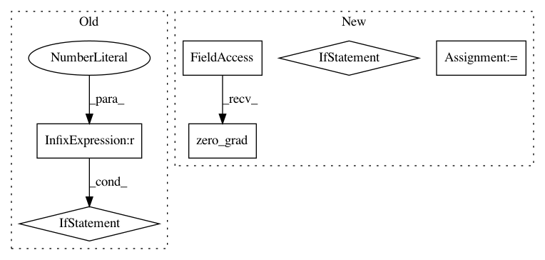

3bba9a4f2dc3cecc76b105f9601a49e543f249e1,examples/data_parallel.py,,,#,29
Before Change
model = Net()
if torch.cuda.device_count() > 1:
print("Let\"s use", torch.cuda.device_count(), "GPUs!")
model = DataParallel(model)
device = torch.device("cuda:0" if torch.cuda.is_available() else "cpu")
model.to(device)
for data_list in loader:
After Change
optimizer = torch.optim.Adam(model.parameters(), lr=0.01)
for data_list in loader:
optimizer.zero_grad()
output = model(data_list)
y = torch.cat([data.y for data in data_list]).to(output.device)
loss = F.nll_loss(output, y)
loss.backward()
optimizer.step()
In pattern: SUPERPATTERN
Frequency: 3
Non-data size: 6
Instances
Project Name: rusty1s/pytorch_geometric
Commit Name: 3bba9a4f2dc3cecc76b105f9601a49e543f249e1
Time: 2019-03-17
Author: matthias.fey@tu-dortmund.de
File Name: examples/data_parallel.py
Class Name:
Method Name:
Project Name: rusty1s/pytorch_geometric
Commit Name: 3bba9a4f2dc3cecc76b105f9601a49e543f249e1
Time: 2019-03-17
Author: matthias.fey@tu-dortmund.de
File Name: examples/data_parallel.py
Class Name:
Method Name:
Project Name: pytorch/fairseq
Commit Name: a233fceb859593143dbc29226f483f29253976ae
Time: 2017-12-06
Author: myleott@fb.com
File Name: fairseq/multiprocessing_trainer.py
Class Name: MultiprocessingTrainer
Method Name: _async_backward_and_opt